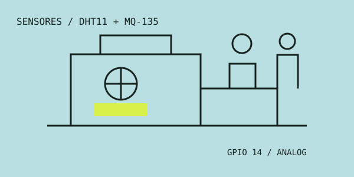
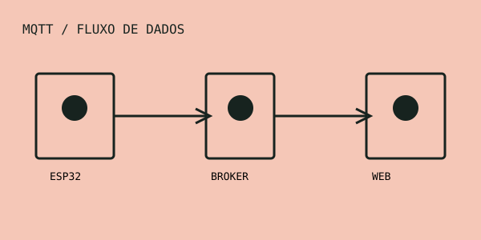
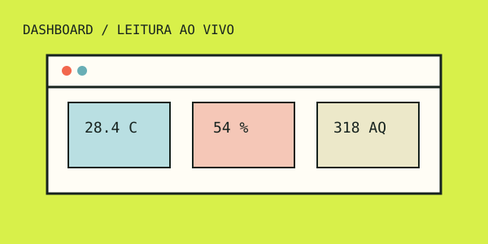

01 / COLETA
O hardware sente
DHT11 mede temperatura e umidade. MQ-135 percebe a qualidade do ar.
Estacao 01 / ambiente conectado
Uma ponte entre o mundo fisico e uma leitura clara dos dados. O ESP32 coleta, o MQTT transporta e este painel transforma sinais em decisoes.
Abrir dashboard →Como funciona
O projeto foi desenhado como uma cadeia simples e confiavel: medir, transportar e tornar visivel.

DHT11 mede temperatura e umidade. MQ-135 percebe a qualidade do ar.

O ESP32 publica em tres topicos MQTT e o broker distribui cada leitura.

O navegador recebe via WebSockets e atualiza indicadores e alertas em tempo real.
Painel operacional
Leituras ambientais recebidas da estacao ESP32.
Nenhuma leitura recebida ainda.